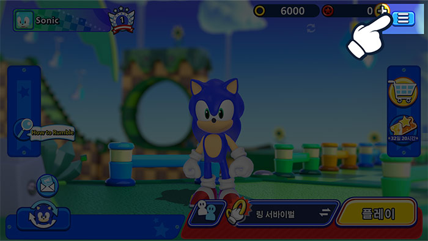
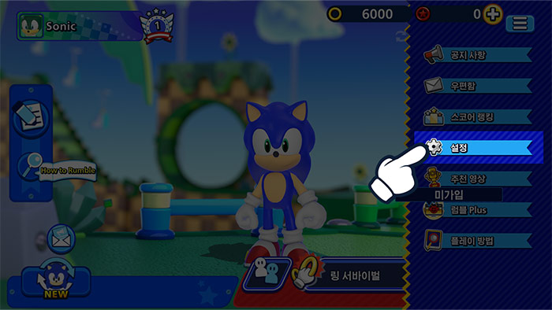
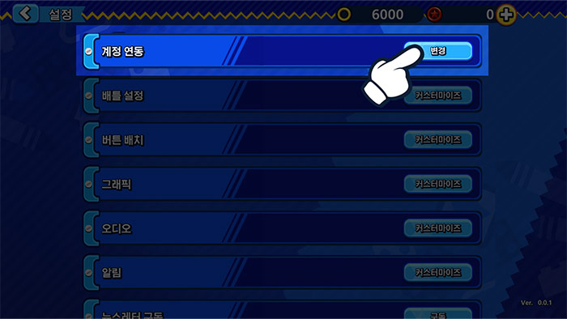
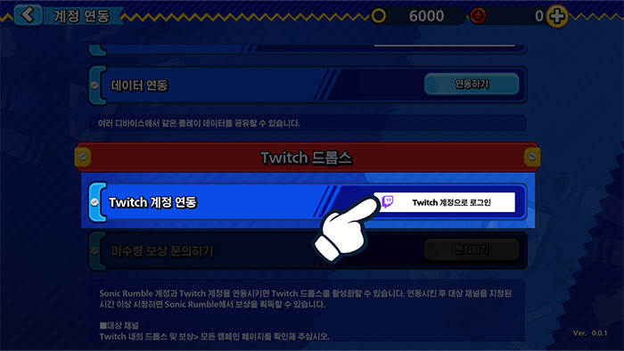
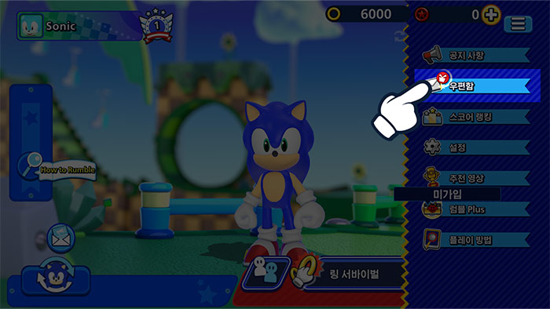
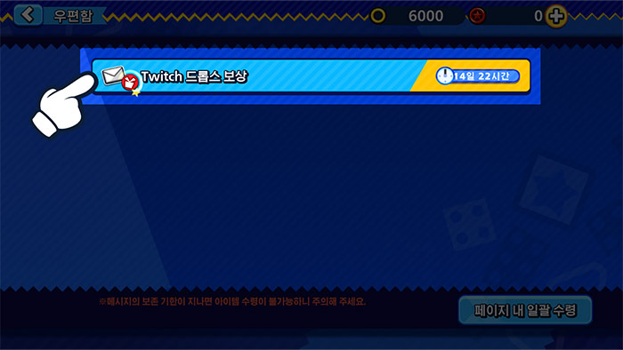

Twitch 드롭스라이브 스트리밍을 시청하고 인게임 보상을 획득하세요!
Twitch 드롭스라이브 스트리밍을 시청하고 인게임 보상을 획득하세요!
지금 Twitch 계정을 연동해 보세요!
계정 연동 방법
1Sonic Rumble 내 '메뉴' 버튼을 클릭하세요.

2'설정' 메뉴를 클릭하세요.

3'계정 연동' 버튼을 클릭하세요.

4Twitch 드롭스를 선택한 후, 'Twitch로 로그인' 버튼을 선택하여 Twitch 계정으로 접속하세요.

5이제 Sonic Rumble 계정과 Twitch 계정이 연동되었습니다!
보상 수령 방법
1Sonic Rumble 내 '우편함' 버튼을 클릭하세요.

2우편함에서 보상을 확인하세요.

*점검 중 보상이 메일함으로 전송될 경우 보상을 수령하는 데 문제가 발생할 수 있습니다.
이러한 문제가 발생하면 메뉴 > 설정 > 계정 연결 > Twitch 드롭스로 이동한 다음 '수령' 버튼을 클릭하여 보상을 메일함으로 다시 전송하세요.
FAQ
- QTwitch 드롭스는 무엇인가요?
- ATwitch에서 라이브 스트리밍을 시청하기만 해도 게임 내 보상을 획득할 수 있는 이벤트입니다.
Sonic Rumble 계정과 Twitch 계정을 연동하기만 하면 참여할 수 있습니다. - Q보상은 어떻게 받을 수 있나요?
- ATwitch 드롭스 기능을 활성화하고 조건을 충족하는 Sonic Rumble 라이브 스트리밍을 시청하여 드롭스 게이지를 채우세요. 게이지가 가득 차면 보상을 받을 수 있습니다.
- Q현재 참여 중인 Twitch 드롭스 이벤트를 어떻게 확인할 수 있나요?
- A여기에서 Twitch 인벤토리 페이지에 접속하면 참여 중인 모든 Twitch 드롭스 이벤트와 수령한 보상을 확인할 수 있습니다.
- Q드롭스 보상은 언제 도착하나요?
- A보상은 24시간 이내에 게임 내 우편함으로 지급됩니다.
보상을 수령한 후 계정 연동을 해제하려면, 반드시 Sonic Rumble 계정에서 보상을 수령한 후 진행하세요. - QSonic Rumble 계정을 여러 개 보유 중인데, 모든 계정에 대해 보상을 받을 수 있나요?
- ATwitch 드롭스 보상은 한 번만 수령 가능합니다. 또한 각 Twitch 계정은 한 번에 하나의 Sonic Rumble 계정만 연동할 수 있습니다.
동일한 유형의 보상은 각 Sonic Rumble 계정과 Twitch 계정별로 한 번만 수령할 수 있습니다.